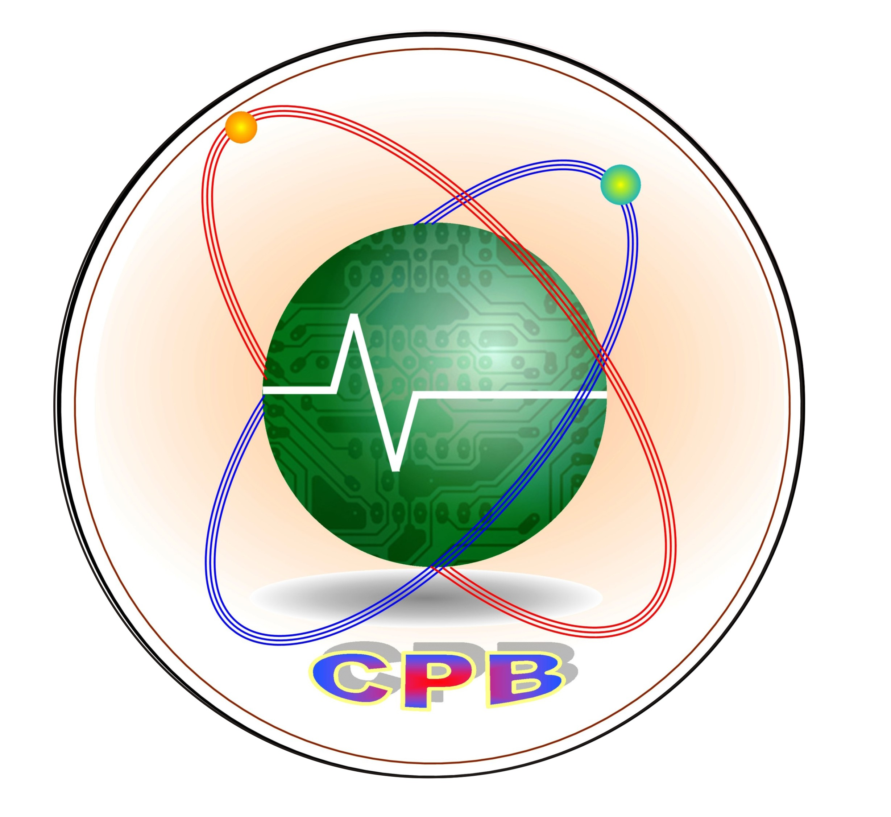

Personalul didactic al catedrei:
9 profesori, inclusiv:
-
1 profesor cu grad didactic superior;
-
3 profesori cu grad didactic I;
-
4 profesori cu grad didactic doi;
-
1 profesor titular.
Catedra „Radioelectronică și electromecanică” este compusă din 9 membri:
- Rotari Vera – Șef catedră, profesor la disciplini de specialitate, grad didactic întâi
- Ghincul Alexandr – profesor la disciplini de specialitate, grad didactic superior
- Berega Valentin – profesor la disciplini de specialitate, grad didactic doi
- Darii Ivan – profesor la disciplini de specialitate, grad didactic doi
- Gorobeț Ecaterina – profesor la disciplini de specialitate, grad didactic doi
- Iuzu Corneliu – profesor la disciplini de specialitate, grad didactic doi
- Carabulea Maria – profesor de educația fizică, grad didactic întâi
- Toderica Semion – profesor de educația fizică, grad didactic întâi
- Ceban Ion – profesor de educația fizică
Misiunea principală a catedrei Catedrei Radioelectronică și Electomecanică este: desfășurarea procesului de predare – învățare – evaluare a disciplinelor predate la cele mai înalte standarde de calitate cu scopul formării la elevi, a unei gândiri tehnice, critice; abilități și deprinderi practice în domeniul activității electrice, energetice, electronice și radio.
Pentru realizarea cu succes a procesului de predare – învățare – evaluare, la actual moment membrii catedrei Radioelectronică și Electromecanică acordă o atenție deosebită realizării următoarelor obiective majore:
- îmbunătățirea continuă a calității serviciilor educaționale cu scopul mențineri la un nivel înalt satisfacția clienților;
- dezvoltarea continuă a competenților profesionale ale personalului didactic și conștientizarea importanței acestora în asigurarea calității serviciilor educaționale;
- îmbunătățirea continuă a proceselor desfășurate în cadrul catedrei: învățământ, cercetare științifică, educație, activitate extracurriculară etc;
- asigurarea tuturor disciplinelor obligatorii și la liberă alegere predate de catedră cu curicule, corelarea și ajustarea la cerințele învățământului performant;
- asigurarea disciplinelor predate cu suport metodico-didactic: elaborarea și publicarea materialelor metodice și didactice, manualelor, notelor de curs etc., actualizarea, reeditarea lucrărilor metodico-didactice necesare pentru procesul de învățământ;
- implementarea și utilizarea mai activă a tehnologiilor informaționale în procesul de predare – învățare – evaluare și aplicarea pe larg a noilor tehnologii educaționale în cadrul orelor teoretice, practice, de laborator și de studiu individual;
- menținerea unui climat psihologic favorabil, bazat pe cooperare și colaborare, competiție loială, consolidarea disciplinei de muncă, armonizarea continuă a relațiilor profesor-profesor și profesor-student.
Activitatea Catedrei Inginerie și Management în Construcții de Mașini este promovată prin prisma realizării obiectivului formării continuă, învățării pe parcursul întregii vieți, comunicării constructive, promovării valorilor culturale, științifice și toleranței, dar și formării abilităților profesionale și practice.
Catedra Inginerie și Management în Construcții de Mașini este formată din:
- Ucraineț Irina, șef catedră, profesoară la discipline economice, grad didactic superior,
- Cernitu Eugenia, profesoară la discipline economice,
- Ciubara Iulia, profesoară la disciple de specialitate, grad didactic doi;
- Cornescu Artur, profesor la discipline de specialitate, grad didactic;
- Craițman Liudmila, Șef secție calitate, profesoară la discipline de specialitate și socioumanistice, grad didactic I;
- Grozavu Valeriu, profesor la discipline de specialitate, grad didactic II,
- Jacot Lilia, profesoară la desen tehnic, grad didactic II,
- Lisnic Ion, Director, profesor la discipline de specialitate, grad didactic doi;
- Lisnic Marian, profesor la discipline de specialitate, grad didactic II,
- Romaniuc Ecaterina, profesoară la discipline de specialitate, grad didactic II,
- Stah Stela, Director adjunct pentru instruire și educație, profesoară la discipline economice, grad didactic superior.
Pentru realizarea cu succes a procesului de predare – învățare – evaluare, membrii catedrei Inginerie și Management în Construcții de Mașini urmăresc îndeplinirea următoarelor obiective:
- Organizarea procesului educațional cu elaborarea și aprobarea: planului de activitate al catedrei, planurilor tematice de lungă durată, planificării activității cercurilor și cluburilor la discipline.
- Promovarea activității educaționale prin prisma respectării normelor, valorilor și standardelor educaționale de calitate.
- Elaborarea și aprobarea proiectelor de curs și proiectelor de diploma.
- Ghidarea elevilor la îndeplinrea lucrărilor practice și de laborator proiectelor de curs și proiectelor de diploma.
- Planificarea și organizare a orelor de studii în conformitate cu cerințele standardelor educaționale în vigoare.
- Stabilirea programului de consultații și a stagiilor de practică, conform planului de învățământ.
- Pregătirea elevilor pentru susținerea examenului de calificare (examenelor de absolvire).
- Motivarea elevilor spre învățare la toate disciplinele predate la catedră.
- Promovarea orelor de studii, consultațiilor, activităților extracurriculare în conformitate cu interesele elevilor.
- Cooperarea cu agenții economici de profil, pentru promovarea stagiilor de practică și excursiilor demonstrative pentru elevi.
- Susținerea elevilor pentru participarea la diverse activități din colegiu și din municipiu ce stimuleză dezvoltarea personală și profesională a lor.